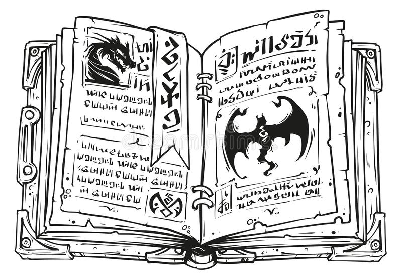

Libros de magia

Enfundado en una gruesa túnica verde oscura y haciendo un esfuerzo por cargar una torre de doce libros entre sus brazos, Félix sube por una empinada calle de piedra iluminada por la luz difusa de las farolas. Es una noche de invierno en «La ciudad que sueña», y la residencia del profesor Aragosa nunca había parecido tan lejana…
Blablabla, llega a un cruce de caminos:
Calle Azalea
Calle Magnolia